Chapter 6 Data Visualization in R
6.1 ggplot2: The Grammar of Graphics
ggplot2 is the tidyverse package for data visualization, based on Leland Wilkinson’s “Grammar of Graphics.” Unlike base R plotting, ggplot2 builds plots layer by layer using a consistent grammar that makes complex visualizations intuitive and customizable.
The grammar of graphics breaks down any plot into fundamental components:
- Data: The dataset you want to visualize
- Aesthetics (aes): How variables map to visual properties (x, y, color, size, etc.)
- Geometries (geom): The visual elements that represent data (points, lines, bars, etc.)
- Statistics (stat): Statistical transformations of the data (counts, means, etc.)
- Scales: How aesthetic mappings translate to visual values
- Coordinate systems: How data maps to the plot area
- Themes: Overall visual appearance
6.1.1 Basic ggplot2 Structure
Every ggplot follows this basic template:
# Basic template
ggplot(data = <DATA>) +
<GEOM_FUNCTION>(mapping = aes(<MAPPINGS>)) +
<OTHER_LAYERS>Let’s start with the gapminder dataset to explore these concepts:
## ── Attaching core tidyverse packages ──────────────────────── tidyverse 2.0.0 ──
## ✔ dplyr 1.1.4 ✔ readr 2.1.5
## ✔ forcats 1.0.0 ✔ stringr 1.5.1
## ✔ lubridate 1.9.3 ✔ tibble 3.2.1
## ✔ purrr 1.0.2 ✔ tidyr 1.3.1
## ── Conflicts ────────────────────────────────────────── tidyverse_conflicts() ──
## ✖ dplyr::filter() masks stats::filter()
## ✖ dplyr::lag() masks stats::lag()
## ℹ Use the conflicted package (<http://conflicted.r-lib.org/>) to force all conflicts to become errors## # A tibble: 6 × 6
## country continent year lifeExp pop gdpPercap
## <fct> <fct> <int> <dbl> <int> <dbl>
## 1 Afghanistan Asia 1952 28.8 8425333 779.
## 2 Afghanistan Asia 1957 30.3 9240934 821.
## 3 Afghanistan Asia 1962 32.0 10267083 853.
## 4 Afghanistan Asia 1967 34.0 11537966 836.
## 5 Afghanistan Asia 1972 36.1 13079460 740.
## 6 Afghanistan Asia 1977 38.4 14880372 786.6.2 Basic Plot Types
6.2.1 Scatter Plots with geom_point()
# Basic scatter plot
ggplot(data = gapminder, mapping = aes(x = gdpPercap, y = lifeExp)) +
geom_point()
# Add color mapping
ggplot(data = gapminder, aes(x = gdpPercap, y = lifeExp, color = continent)) +
geom_point()
# Add size mapping
ggplot(data = gapminder, aes(x = gdpPercap, y = lifeExp,
color = continent, size = pop)) +
geom_point(alpha = 0.7) # alpha controls transparency
6.2.2 Line Plots with geom_line()
# Line plot showing trends over time
gapminder %>%
filter(country %in% c("United States", "China", "India", "Germany")) %>%
ggplot(aes(x = year, y = lifeExp, color = country)) +
geom_line(size = 1.2)## Warning: Using `size` aesthetic for lines was deprecated in ggplot2 3.4.0.
## ℹ Please use `linewidth` instead.
## This warning is displayed once every 8 hours.
## Call `lifecycle::last_lifecycle_warnings()` to see where this warning was
## generated.
# Multiple lines with points
gapminder %>%
filter(continent == "Oceania") %>%
ggplot(aes(x = year, y = gdpPercap, color = country)) +
geom_line() +
geom_point()
6.2.3 Bar Plots with geom_col() and geom_bar()
# geom_col: heights of bars represent values in data
gapminder %>%
filter(year == 2007, continent == "Americas") %>%
ggplot(aes(x = country, y = pop)) +
geom_col() +
coord_flip() # Flip coordinates for better readability
# geom_bar: counts observations
gapminder %>%
filter(year == 2007) %>%
ggplot(aes(x = continent)) +
geom_bar()
# Stacked bar chart
gapminder %>%
filter(year %in% c(1997, 2007)) %>%
mutate(year = as.factor(year)) %>%
ggplot(aes(x = continent, fill = year)) +
geom_bar(position = "stack")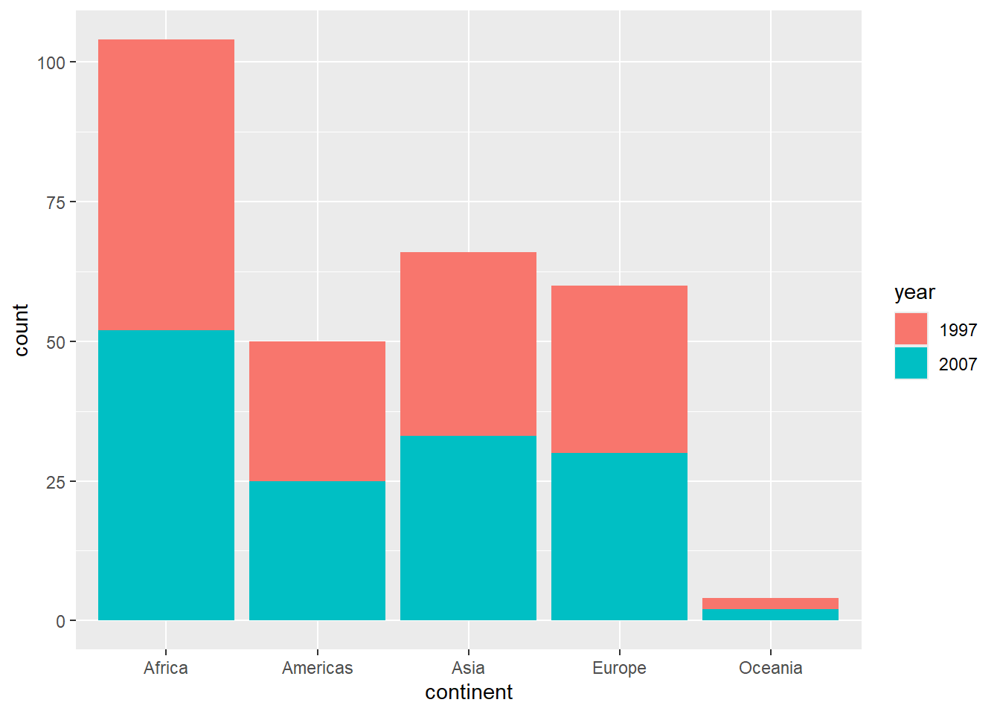
6.2.4 Histograms with geom_histogram()
# Basic histogram
gapminder %>%
filter(year == 2007) %>%
ggplot(aes(x = lifeExp)) +
geom_histogram(bins = 20, fill = "skyblue", color = "black")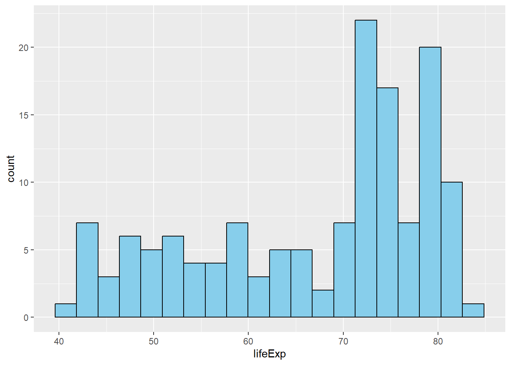
# Histogram with different binwidths
gapminder %>%
filter(year == 2007) %>%
ggplot(aes(x = gdpPercap)) +
geom_histogram(binwidth = 5000, fill = "lightgreen", alpha = 0.7)
6.2.5 Box Plots with geom_boxplot()
# Basic box plot
gapminder %>%
filter(year == 2007) %>%
ggplot(aes(x = continent, y = lifeExp)) +
geom_boxplot()
# Box plot with jittered points
gapminder %>%
filter(year == 2007) %>%
ggplot(aes(x = continent, y = lifeExp, fill = continent)) +
geom_boxplot(alpha = 0.7) +
geom_jitter(width = 0.2, alpha = 0.5)
6.3 Aesthetic Mappings
6.3.1 Understanding aes()
Aesthetics map variables to visual properties. You can set them globally (in ggplot()) or locally (in individual geom functions):
# Global aesthetic mappings
gapminder %>%
filter(year == 2007) %>%
ggplot(aes(x = gdpPercap, y = lifeExp, color = continent, size = pop)) +
geom_point(alpha = 0.7)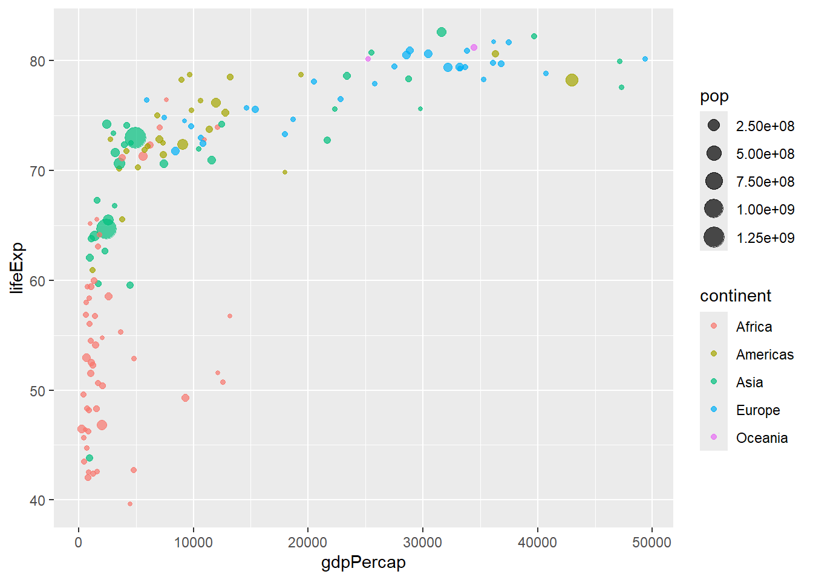
# Local aesthetic mappings
gapminder %>%
filter(year == 2007) %>%
ggplot(aes(x = gdpPercap, y = lifeExp)) +
geom_point(aes(color = continent, size = pop), alpha = 0.7)
6.3.2 Fixed vs. Mapped Aesthetics
# WRONG: color inside aes() when you want a fixed color
# This creates a legend with one color
ggplot(gapminder, aes(x = gdpPercap, y = lifeExp, color = "blue")) +
geom_point()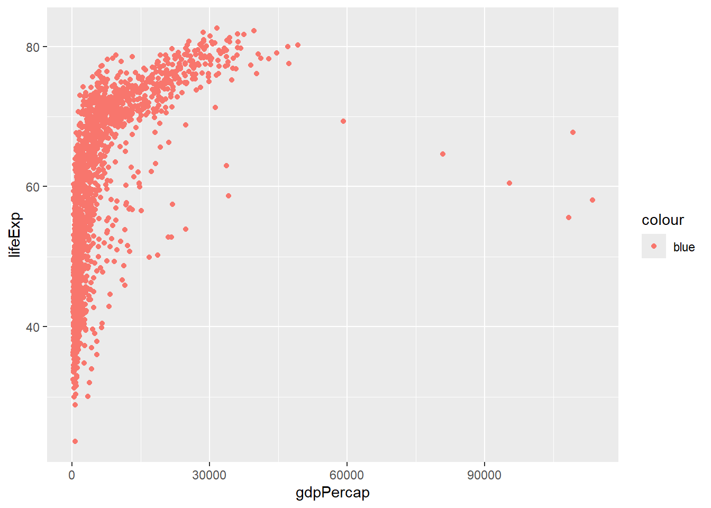
# CORRECT: fixed color outside aes()
ggplot(gapminder, aes(x = gdpPercap, y = lifeExp)) +
geom_point(color = "blue")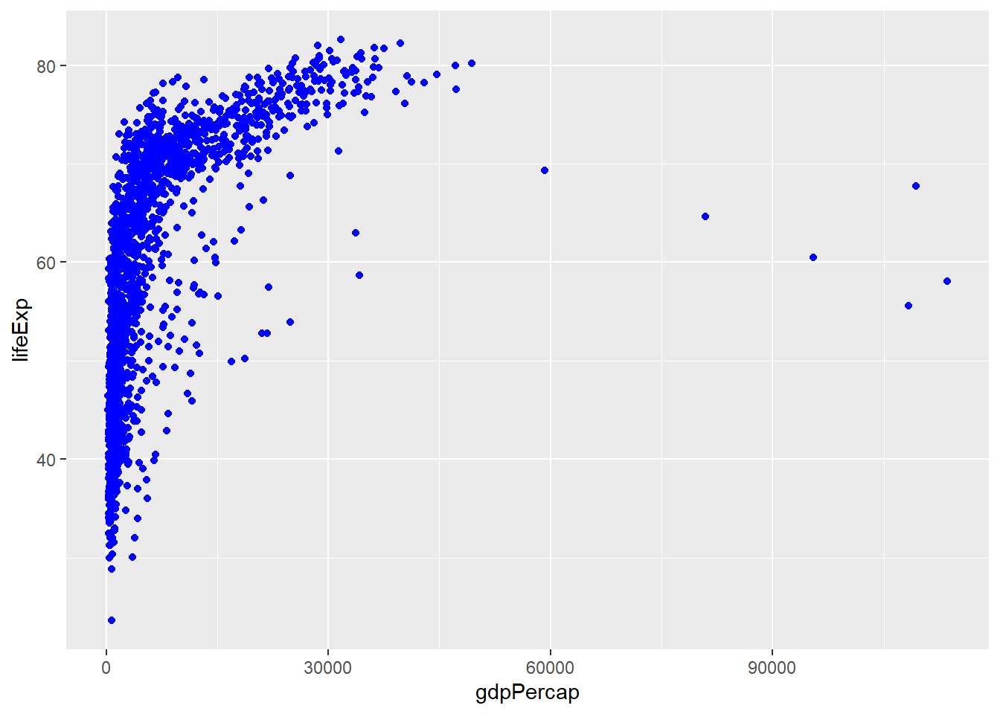
# CORRECT: mapped color inside aes()
ggplot(gapminder, aes(x = gdpPercap, y = lifeExp, color = continent)) +
geom_point()
6.4 Faceting: Small Multiples
6.4.1 facet_wrap()
# Facet by one variable
gapminder %>%
filter(year %in% c(1977, 1987, 1997, 2007)) %>%
ggplot(aes(x = gdpPercap, y = lifeExp, color = continent)) +
geom_point() +
facet_wrap(~ year)
# Control facet layout
gapminder %>%
ggplot(aes(x = year, y = lifeExp, group = country)) +
geom_line(alpha = 0.3) +
facet_wrap(~ continent, nrow = 2)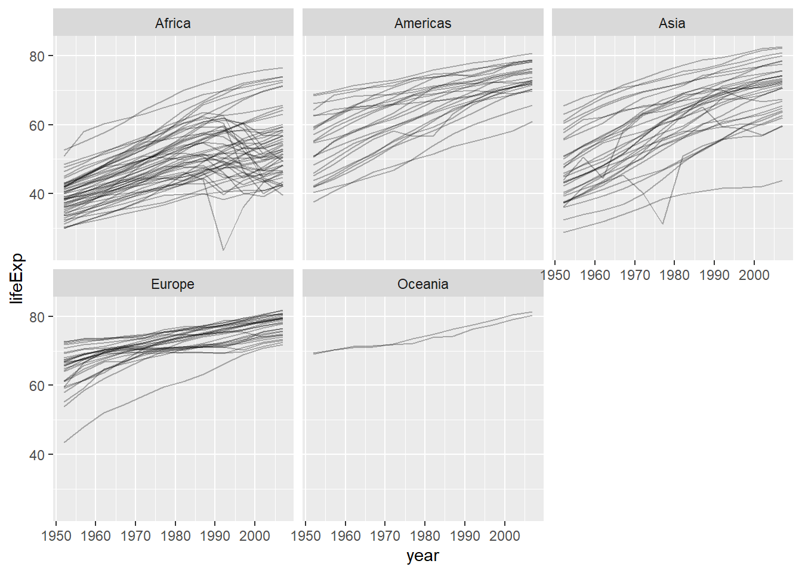
6.4.2 facet_grid()
# Facet by two variables
gapminder %>%
filter(year %in% c(1997, 2007),
continent %in% c("Americas", "Europe", "Asia")) %>%
mutate(pop_category = ifelse(pop > 50000000, "Large", "Small")) %>%
ggplot(aes(x = gdpPercap, y = lifeExp, color = continent)) +
geom_point() +
facet_grid(pop_category ~ year)
6.5 Statistical Transformations
6.5.1 Smooth Lines with geom_smooth()
# Add trend line
gapminder %>%
filter(year == 2007) %>%
ggplot(aes(x = gdpPercap, y = lifeExp)) +
geom_point(aes(color = continent), alpha = 0.7) +
geom_smooth(method = "lm", se = FALSE, color = "black")## `geom_smooth()` using formula = 'y ~ x'
# Separate trend lines by group
gapminder %>%
filter(year == 2007) %>%
ggplot(aes(x = gdpPercap, y = lifeExp, color = continent)) +
geom_point(alpha = 0.7) +
geom_smooth(method = "lm", se = FALSE)## `geom_smooth()` using formula = 'y ~ x'
6.5.2 Statistical Summaries
# stat_summary for custom statistics
gapminder %>%
filter(year == 2007) %>%
ggplot(aes(x = continent, y = lifeExp)) +
stat_summary(fun = mean, geom = "point", size = 3, color = "red") +
stat_summary(fun.data = mean_se, geom = "errorbar", width = 0.2) +
geom_jitter(alpha = 0.3, width = 0.2)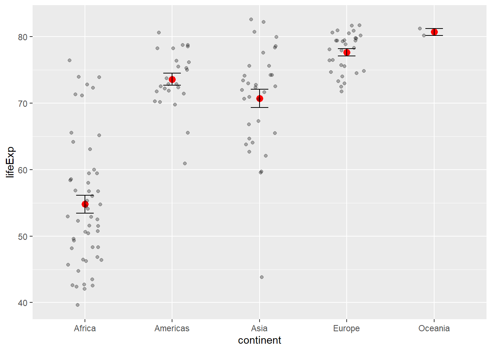
6.6 Scales: Controlling Aesthetic Mappings
6.6.1 Color Scales
# Manual color scale
gapminder %>%
filter(year == 2007) %>%
ggplot(aes(x = gdpPercap, y = lifeExp, color = continent)) +
geom_point(size = 2) +
scale_color_manual(values = c("Africa" = "red", "Americas" = "blue",
"Asia" = "green", "Europe" = "orange",
"Oceania" = "purple"))
# Brewer color palette
gapminder %>%
filter(year == 2007) %>%
ggplot(aes(x = gdpPercap, y = lifeExp, color = continent)) +
geom_point(size = 2) +
scale_color_brewer(type = "qual", palette = "Set2")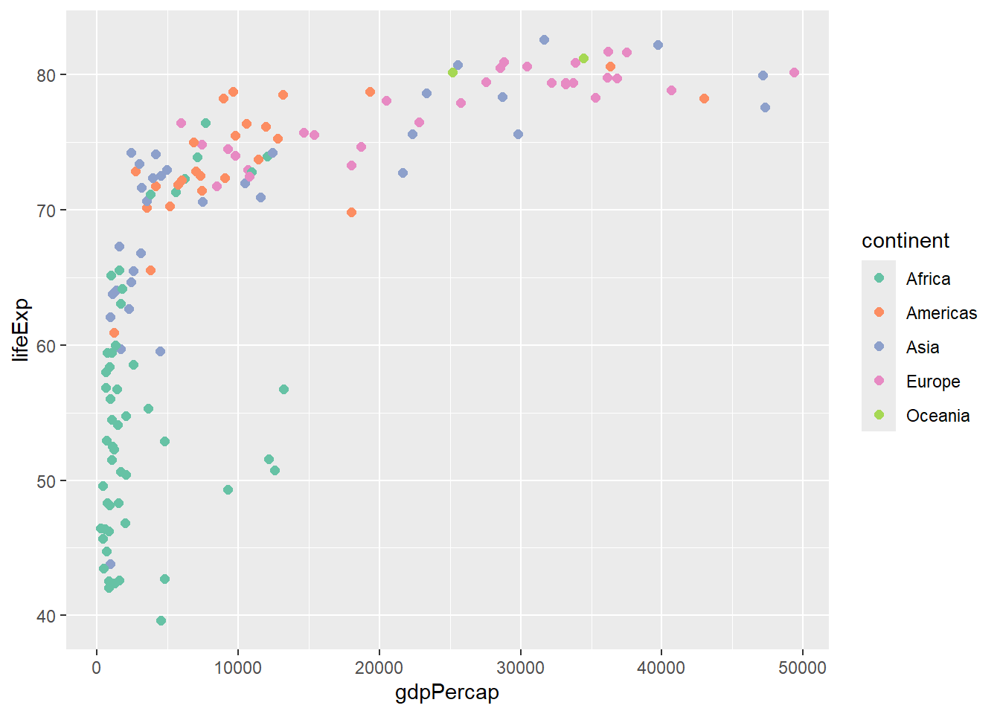
# Viridis color palette
gapminder %>%
filter(year == 2007) %>%
ggplot(aes(x = gdpPercap, y = lifeExp, color = pop)) +
geom_point(size = 2) +
scale_color_viridis_c()
6.6.2 Axis Scales
# Log scale for x-axis
gapminder %>%
filter(year == 2007) %>%
ggplot(aes(x = gdpPercap, y = lifeExp, color = continent)) +
geom_point(size = 2) +
scale_x_log10()
# Custom breaks and labels
gapminder %>%
filter(year == 2007) %>%
ggplot(aes(x = gdpPercap, y = lifeExp, color = continent)) +
geom_point(size = 2) +
scale_x_continuous(breaks = seq(0, 50000, 10000),
labels = paste0("$", seq(0, 50, 10), "K"))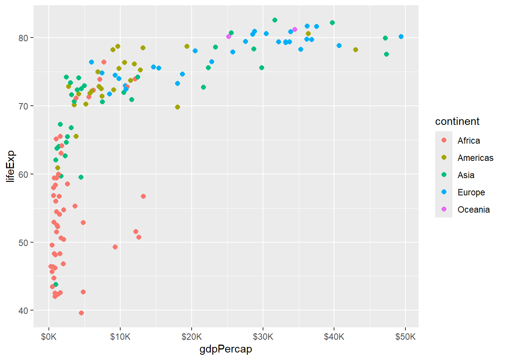
# Limit axis ranges
gapminder %>%
filter(year == 2007) %>%
ggplot(aes(x = gdpPercap, y = lifeExp, color = continent)) +
geom_point(size = 2) +
xlim(0, 30000) +
ylim(40, 85)## Warning: Removed 21 rows containing missing values or values outside the scale range
## (`geom_point()`).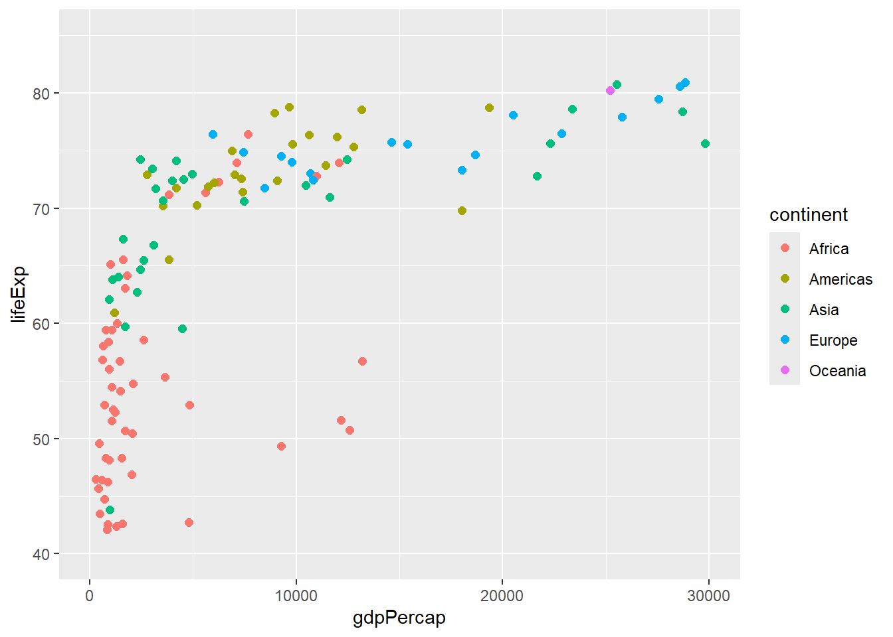
6.7 Coordinates and Transformations
# Flip coordinates
gapminder %>%
filter(year == 2007, continent == "Europe") %>%
ggplot(aes(x = reorder(country, lifeExp), y = lifeExp)) +
geom_col() +
coord_flip()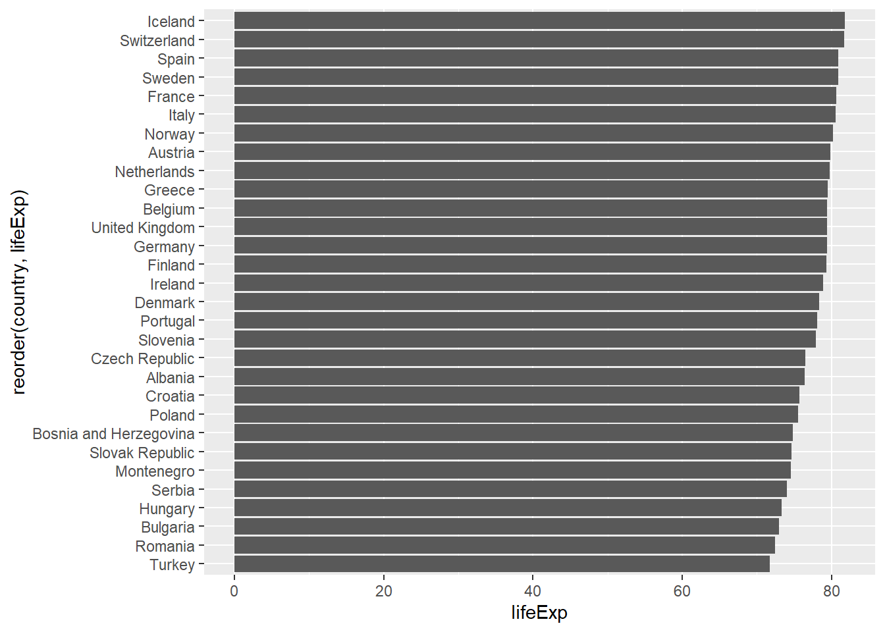
# Polar coordinates (for pie charts)
gapminder %>%
filter(year == 2007) %>%
count(continent) %>%
ggplot(aes(x = "", y = n, fill = continent)) +
geom_col() +
coord_polar(theta = "y")
# Fixed aspect ratio
gapminder %>%
filter(year == 2007) %>%
ggplot(aes(x = gdpPercap, y = lifeExp)) +
geom_point() +
coord_fixed(ratio = 300) # 300 GDP per capita = 1 year life expectancy
6.8 Labels and Themes
6.8.1 Adding Labels
# Basic labels
gapminder %>%
filter(year == 2007) %>%
ggplot(aes(x = gdpPercap, y = lifeExp, color = continent)) +
geom_point(size = 2) +
labs(
title = "Life Expectancy vs GDP Per Capita (2007)",
subtitle = "Each point represents a country",
x = "GDP per capita (USD)",
y = "Life expectancy (years)",
color = "Continent",
caption = "Data source: Gapminder"
)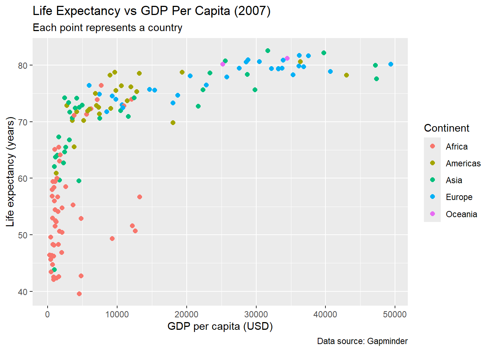
6.8.2 Theme Customization
# Built-in themes
p <- gapminder %>%
filter(year == 2007) %>%
ggplot(aes(x = gdpPercap, y = lifeExp, color = continent)) +
geom_point(size = 2)
# Different theme options
p + theme_minimal()
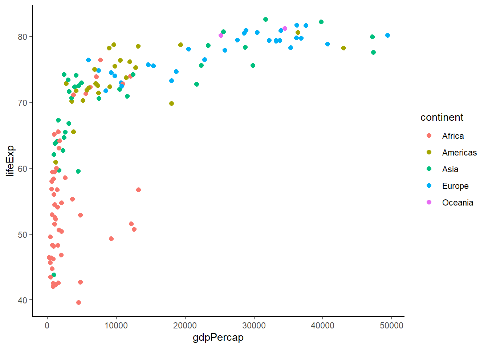
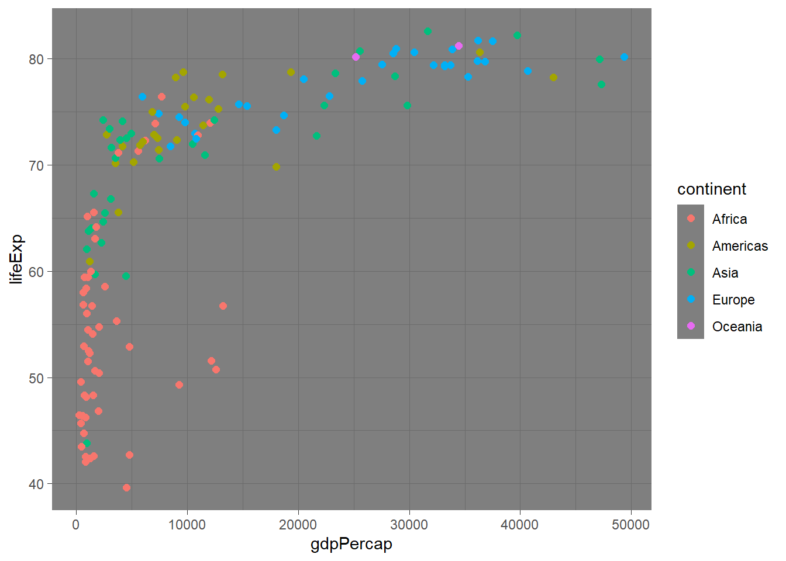
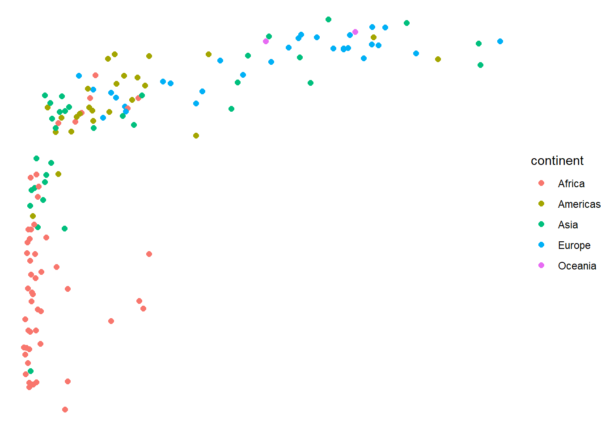
# Custom theme modifications
p +
theme_minimal() +
theme(
plot.title = element_text(size = 16, face = "bold"),
axis.text = element_text(size = 12),
legend.position = "bottom",
panel.grid.minor = element_blank()
)
6.10 Combining Multiple Geoms
# Combining points and lines
gapminder %>%
filter(continent == "Americas") %>%
group_by(year) %>%
summarise(avg_life_exp = mean(lifeExp), .groups = 'drop') %>%
ggplot(aes(x = year, y = avg_life_exp)) +
geom_line(size = 1.2, color = "blue") +
geom_point(size = 3, color = "red") +
labs(title = "Average Life Expectancy in Americas Over Time",
y = "Average Life Expectancy")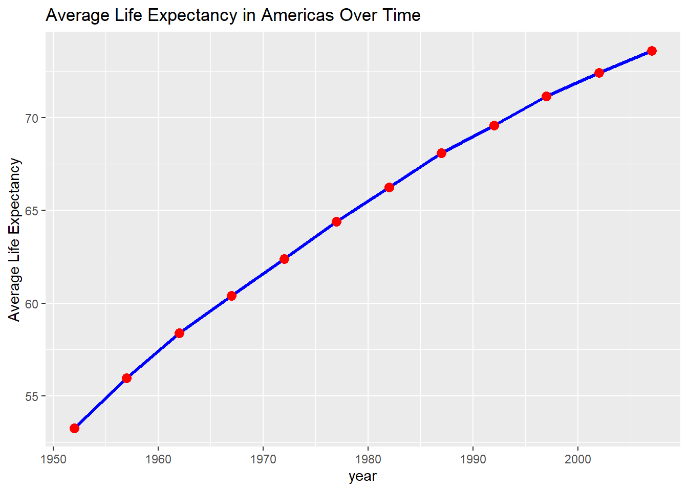
# Error bars with points
gapminder %>%
filter(year == 2007) %>%
group_by(continent) %>%
summarise(
mean_life = mean(lifeExp),
se_life = sd(lifeExp) / sqrt(n()),
.groups = 'drop'
) %>%
ggplot(aes(x = continent, y = mean_life)) +
geom_col(fill = "lightblue", alpha = 0.7) +
geom_errorbar(aes(ymin = mean_life - se_life,
ymax = mean_life + se_life),
width = 0.2)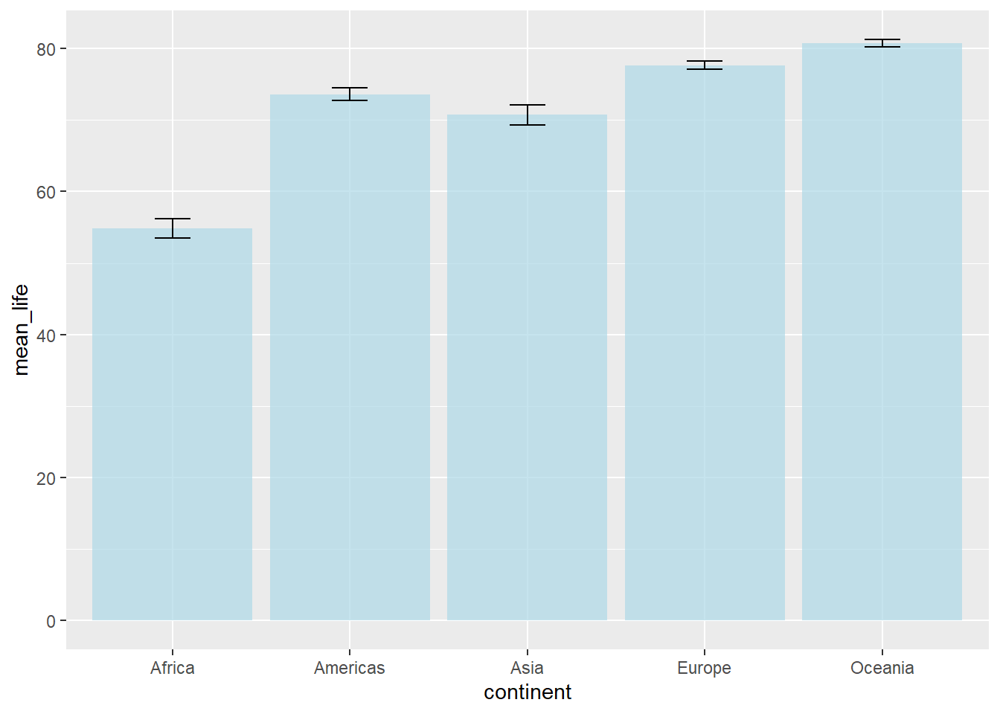
6.11 Text and Annotations
# Add text labels to points
gapminder %>%
filter(year == 2007, continent == "Europe") %>%
ggplot(aes(x = gdpPercap, y = lifeExp)) +
geom_point() +
geom_text(aes(label = country), size = 3, hjust = -0.1)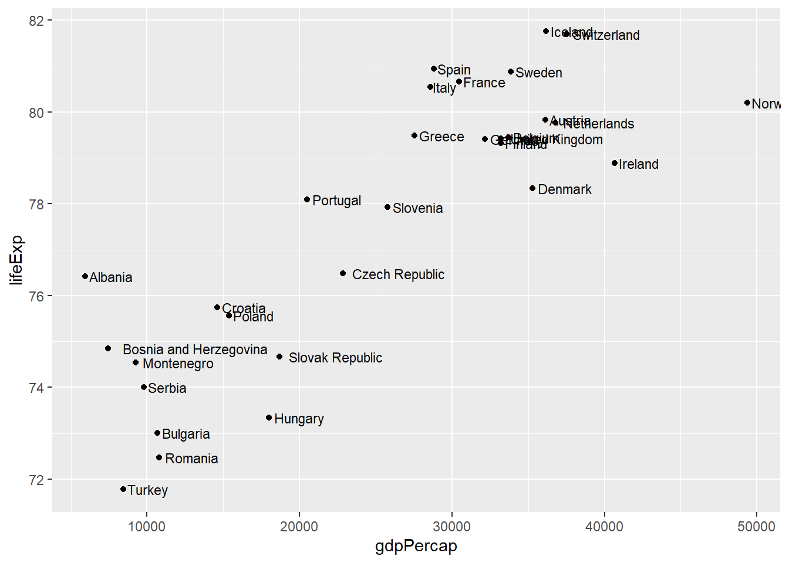
# Better: use geom_text_repel to avoid overlapping
library(ggrepel)
gapminder %>%
filter(year == 2007, continent == "Europe") %>%
ggplot(aes(x = gdpPercap, y = lifeExp)) +
geom_point() +
geom_text_repel(aes(label = country), size = 3)
6.12 Practical Example: Complex Multi-layered Plot
# Complex visualization combining multiple elements
complex_plot <- gapminder %>%
filter(year %in% c(1977, 1987, 1997, 2007)) %>%
ggplot(aes(x = gdpPercap, y = lifeExp)) +
# Add points with continent color and population size
geom_point(aes(color = continent, size = pop), alpha = 0.7) +
# Add trend line
geom_smooth(method = "lm", se = FALSE, color = "black", size = 0.5) +
# Facet by year
facet_wrap(~ year, nrow = 2) +
# Use log scale for x-axis
scale_x_log10(breaks = c(500, 2000, 8000, 32000),
labels = c("$500", "$2,000", "$8,000", "$32,000")) +
# Customize colors
scale_color_brewer(type = "qual", palette = "Set2") +
# Adjust size scale
scale_size_continuous(range = c(1, 8), guide = "none") +
# Add labels
labs(
title = "The Relationship Between Wealth and Health Over Time",
subtitle = "GDP per capita vs Life Expectancy (1977-2007)",
x = "GDP per capita (log scale)",
y = "Life expectancy (years)",
color = "Continent",
caption = "Point size represents population size. Data: Gapminder"
) +
# Customize theme
theme_minimal() +
theme(
plot.title = element_text(size = 14, face = "bold"),
plot.subtitle = element_text(size = 11),
strip.text = element_text(size = 10, face = "bold"),
legend.position = "bottom"
)
complex_plot## `geom_smooth()` using formula = 'y ~ x'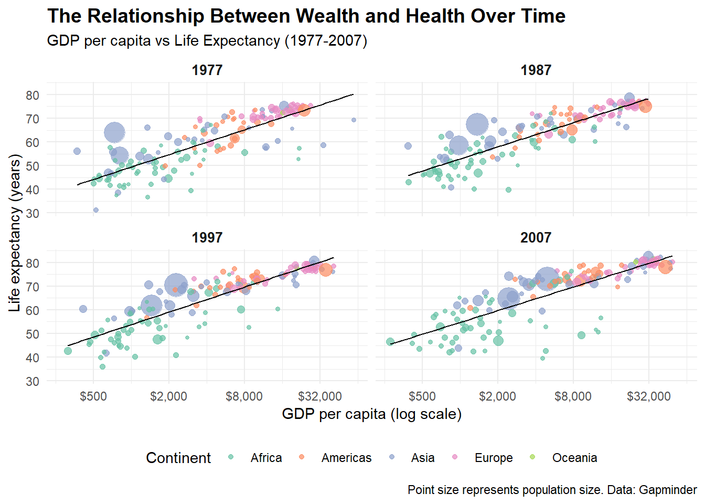
6.13 ggplot2 Function Summary Table
| Function | Category | Description | Example |
|---|---|---|---|
ggplot() |
Core | Initialize a plot with data and aesthetics | ggplot(data, aes(x = var1, y = var2)) |
aes() |
Core | Define aesthetic mappings | aes(x = gdp, y = life, color = continent) |
geom_point() |
Geoms | Add points (scatter plot) | geom_point(size = 2, alpha = 0.7) |
geom_line() |
Geoms | Add lines | geom_line(size = 1.2) |
geom_col() |
Geoms | Add bars with heights from data | geom_col(fill = "blue") |
geom_bar() |
Geoms | Add bars that count observations | geom_bar() |
geom_histogram() |
Geoms | Add histogram | geom_histogram(bins = 20) |
geom_boxplot() |
Geoms | Add box plot | geom_boxplot() |
geom_density() |
Geoms | Add density curve | geom_density(alpha = 0.5) |
geom_violin() |
Geoms | Add violin plot | geom_violin() |
geom_tile() |
Geoms | Add tiles (heatmap) | geom_tile() |
geom_smooth() |
Geoms | Add smoothed trend line | geom_smooth(method = "lm") |
geom_text() |
Geoms | Add text labels | geom_text(aes(label = country)) |
geom_jitter() |
Geoms | Add jittered points | geom_jitter(width = 0.2) |
facet_wrap() |
Facets | Create subplots in a wrapped layout | facet_wrap(~ variable) |
facet_grid() |
Facets | Create subplots in a grid | facet_grid(var1 ~ var2) |
scale_x_continuous() |
Scales | Customize continuous x-axis | scale_x_continuous(breaks = c(1,2,3)) |
scale_x_log10() |
Scales | Use log10 scale for x-axis | scale_x_log10() |
scale_color_manual() |
Scales | Manually set colors | scale_color_manual(values = c("red", "blue")) |
scale_color_brewer() |
Scales | Use ColorBrewer palette | scale_color_brewer(palette = "Set2") |
scale_color_viridis_c() |
Scales | Use Viridis color scale (continuous) | scale_color_viridis_c() |
xlim() / ylim() |
Scales | Set axis limits | xlim(0, 100) |
coord_flip() |
Coordinates | Flip x and y coordinates | coord_flip() |
coord_polar() |
Coordinates | Use polar coordinates | coord_polar(theta = "y") |
coord_fixed() |
Coordinates | Fix aspect ratio | coord_fixed(ratio = 1) |
labs() |
Labels | Add/modify plot labels | labs(title = "My Plot", x = "X axis") |
ggtitle() |
Labels | Add plot title | ggtitle("My Plot Title") |
xlab() / ylab() |
Labels | Add axis labels | xlab("X axis label") |
theme() |
Themes | Customize plot appearance | theme(legend.position = "bottom") |
theme_minimal() |
Themes | Apply minimal theme | theme_minimal() |
theme_classic() |
Themes | Apply classic theme | theme_classic() |
theme_dark() |
Themes | Apply dark theme | theme_dark() |
annotate() |
Annotations | Add annotations to plot | annotate("text", x = 1, y = 2, label = "Note") |
6.14 Conclusion
ggplot2’s grammar of graphics provides a powerful and consistent framework for creating visualizations. The key principles to remember are:
- Build plots layer by layer - start with data and aesthetics, then add geoms, scales, and themes
- Map variables to aesthetics - use
aes()to connect your data to visual properties
- Choose appropriate geoms - different geoms for different types of data and relationships
- Use faceting - create small multiples to show patterns across groups
- Customize with scales and themes - fine-tune appearance and mapping of aesthetic properties
By mastering these concepts and functions, you can create publication-ready visualizations that effectively communicate insights from your data.
6.15 My favorite figures I ever made
While in my internship, I was able to work with a huge dataset on detected enteroviruses in clinical settings all over Europe. I collected, harmonized, analyzed and visualized all that data which even got published! The first figure displays the number of detections per month throughout the study periods (with summer months in red) (fig A) and the relative intensity of specific virus types. A light color means that in that specific month, that specific enterovirus type was very common (fig B). The second figure shows a classic epicurve per specific virus type (in red) with the total number of detected enteroviruses per month in grey (Schrijver et al., 2025).